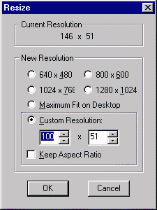
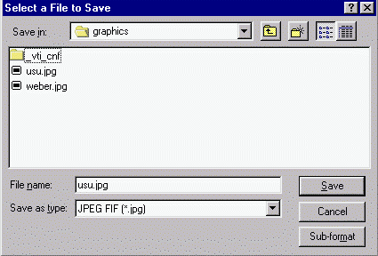

Pix Wizard is a shareware program that is used to change the attributes of graphic images -- from the color depth, to size, to special masks, and file type. We use this program to change the graphics which are scanned or downloaded from a digital camera so that they can be used on the World Wide Web.
In most instances this process requires changing only 1 or two things prior to saving the file. The important item is that when you are done the image's file length (size) must be less than 40k! The steps that I recommend you use to accomplish this file size reduction are listed in priority order below. Each of these steps assumes that the graphic is open within PixWizard.
In most cases the color depth of an image that has been scanned or taken with a digital camera is 16.7 million colors (32 bit). The number of colors need to be reduced to 15 or 16 bit (thousands of colors) for JPEG compliance or even less for GIF compliance. To do this:
In many cases, graphics that have been scanned are too large for inclusion on a html document (unless you want a very large picture). So you may want to shrink the physical size of the graphic. This can be done using two different means: cropping or scaling.
Cropping
To crop a picture you must:
- Determine what is the focus or main idea of the picture.
- Draw a selection rectangle around that area of focus using your mouse and the leftmouse button.
- Once the rectangle is in place, from the Edit menu, select "Crop" or click the crop button (the scissors icon).
- All parts of the image that were outside of the rectangle will be cropped.
Scaling
To scale a picture:
- Go to the Edit menu and select "Resize." A dialog box will appear.
- Determine the resulting size you want the picture to be after resizing. This should be a proportion of the original. The current size is shown in the box labeled "Current Resolution." In the example shown, it is 146 high x 51 wide. If I want the picture to be 3/4 the size of the current image, then I would need to know that that would be .75 times 146 or roughly 110 high by 35 wide.

- To speed things up, click the "Keep Aspect Ratio" box. This will allow you to only change one number and the other one will maintain the same ratio.
- Change the large number to whatever number you determined in step 2 above. Be sure you change it on the same side of the "x" as it appears in the Current Resolution box. If the number you multiplied was the one on the left, change the box on the left or vice versa.
- Click OK (It is important that you NOT press the Enter key because of a bug in the program).
- The picture should shrink to whatever percentage was indicated.
The final step is the saving process. However, it is important that you use "Save As..." rather than Save. The reason for this is to allow you to change the file format type.
When you scanned your image or downloaded it you saved it as a bitmap image (which is a windows standard file format). However, for use on the WWW, a photograph should be saved as a JPG (pronounced jay-peg) file, and a drawn graphic should be saved as a GIF (pronounced Jiff) file format.
Using "Save as..." allows you to change the format of the file; thus, making it internet ready (if that is the intent of your use). An added benefit of changing a file to JPG format is that the file can be compressed, thus further reducing its size (remember the 40 k size limit?!)
After you have selected "Save As..." from the File menu a dialog box will appear:

Return to the PageManager Desktop page.
Return to the PageManager Scan Directions page.